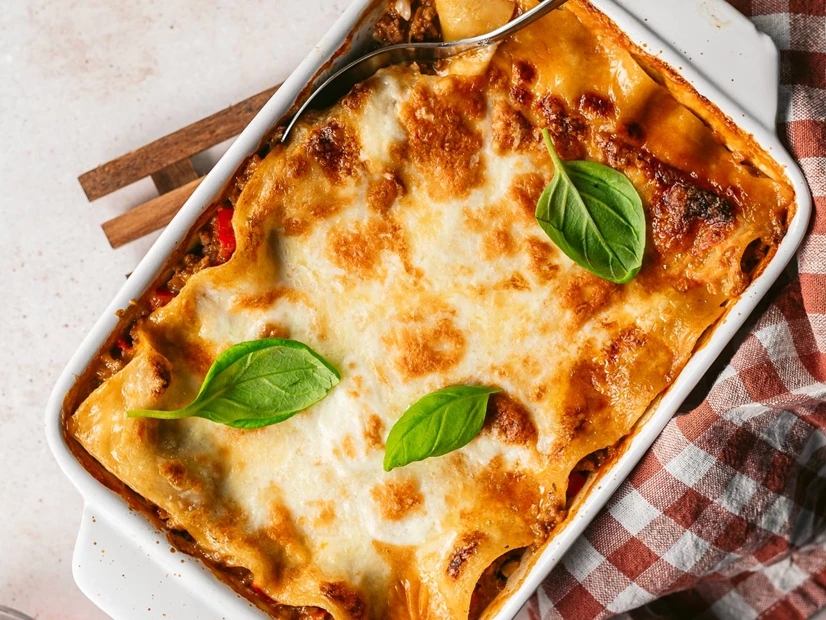

Home
Lasagna Recipe

A Lasanha é uma refeição clássica que agrada a todas as idades. Nesta deliciosa receita de Lasanha, siga o passo para criar uma Lasanha caseira.
- 1/2 cebola roxa
- 3 dentes de alho
- 1/2 pimento vermelho
2 tomates
- Azeite q.b.
- 450 g de carne picada
- 5 c. sopa de molho de tomate
- Manjericão picado q.b.
- 100 ml de vinho branco
- Sal q.b.
- Pimenta q.b.
- Molho bechamel q.b.
- Folhas de lasanha q.b.
- Queijo mozzarella ralado q.b.
- Queijo mozzarella de búfala q.b.
- Folhas de manjericão q.b.
- Preaqueça o forno a 180°C.
- Numa panela, refogue a cebola e o alho até murchar.
- Acrescente a carne picada e cozinhe até dourar.
- Adicione o molho de tomate, o vinho branco, o manjericão, o sal e a pimenta.
- Deixe cozinhar por alguns minutos e desligue o fogo.
- Em um refratário, coloque uma camada de molho e outra de lasanha.
- Repita a camada até terminar os ingredientes.
- Cubra com molho bechamel e queijo ralado.
- Asse por 30 minutos ou até dourar.